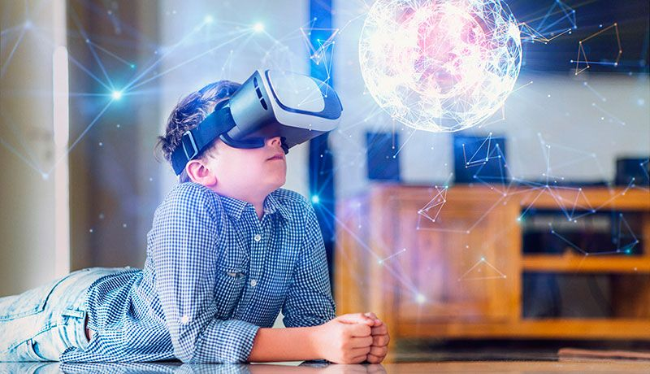
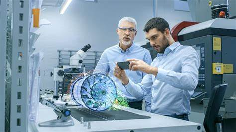
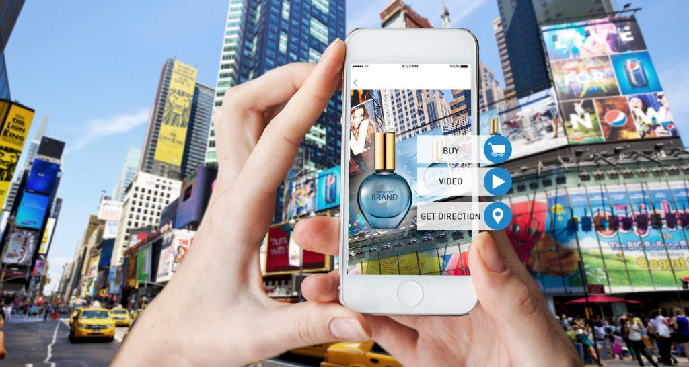
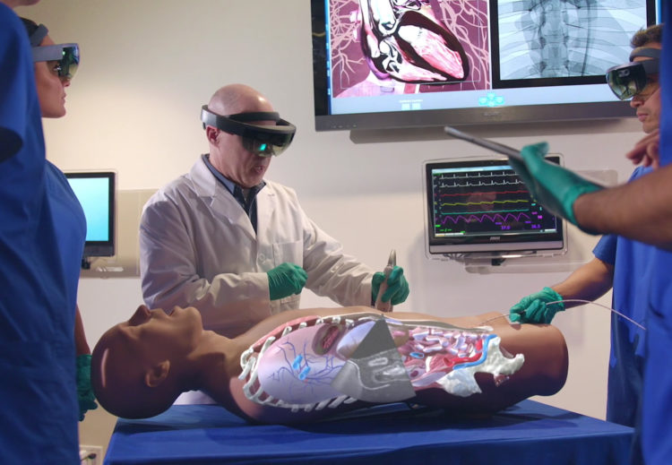

La tecnología de la realidad aumentada tiene un potencial comercial ingente en un amplio abanico de industrias: desde la apertura de nuevos canales de marketing a la mejora de los procesos de formación de los empleados.
-Usos de la Realidad Aumentada-
Entretenimiento
Los dispositivos y las aplicaciones de realidad aumentada pueden identificar no solo las especies de las plantas sino también productos.
Con la realidad aumentada, todos los artículos que se vendieron se convierten en un anuncio andante cuando un cliente potencial puede usar sus anteojos de realidad aumentada o la cámara de su smartphone para identificar el artículo y dónde puede comprarlo.Las pruebas virtuales basadas en la realidad aumentada permiten a los clientes probarse una prenda para ver cómo les queda. Los clientes pueden probarse zapatos mediante una experiencia de realidad aumentada en su iPhone, por ejemplo. Las aplicaciones de realidad aumentada también aumentan el potencial de interacción con los clientes, quizás con sugerencias de que, si un jersey verde no les queda bien, pueden intentar probarse el azul a ver qué pasa.
Fabricación
La realidad aumentada también puede servir para crear una versión mejorada de la formación de los empleados en tiempo real. Muchos de nosotros nos pegamos con los manuales de los electrodomésticos de la cocina: los retos pueden ser incluso mayores cuando hablamos de aprender a manejar una máquina en una línea de montaje. La realidad aumentada hace que la formación sea más interactiva y más clara. En lugar de intentar averiguar si estás sujetando un dispositivo correctamente descifrando los dibujos correspondientes en un manual, un tutor virtual con tecnología de realidad aumentada puede informarte con toda amabilidad de que tienes que voltearlo en otra dirección.
Marketing y Publicidad
La realidad aumentada ayuda a las marcas a conectar directamente con sus consumidores, mejorar el posicionamiento y crear experiencias memorables a través de sus productos, publicidad, eventos y activaciones. En plena era digital, la realidad aumentada nos ofrece múltiples posibilidades para llegar a un espectador, que exige ser no sólo consumidor de las campañas, sino partícipe mismo de la publicidad.
Sector de la Salud
Las tecnologías de realidad aumentada van a jugar un importante papel en el desarrollo de aplicaciones como la telemedicina o la formación sanitaria. Este mercado y sus usos en el sector de la salud podría generar unos ingresos de unos 10,000 millones de dólares para 2024. Los profesionales de la salud, por ejemplo, puede aprovechar y visualizar determinados datos clínicos en el campo de las cirugías, con el fin de obtener diagnósticos más precisos. Además, los equipos de visualización de realidad aumentada ofrecen una gran oportunidad de crecimiento, ya que resultarán muy útiles en la planificación de hospitales y en escenarios como el desarrollo y el examen de fármacos, algo muy necesario en estos momentos en que la vacuna contra la Covid-19 está en el momento de su máxima expansión mundial.
